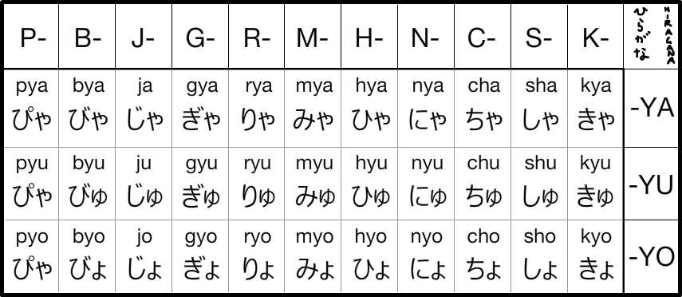
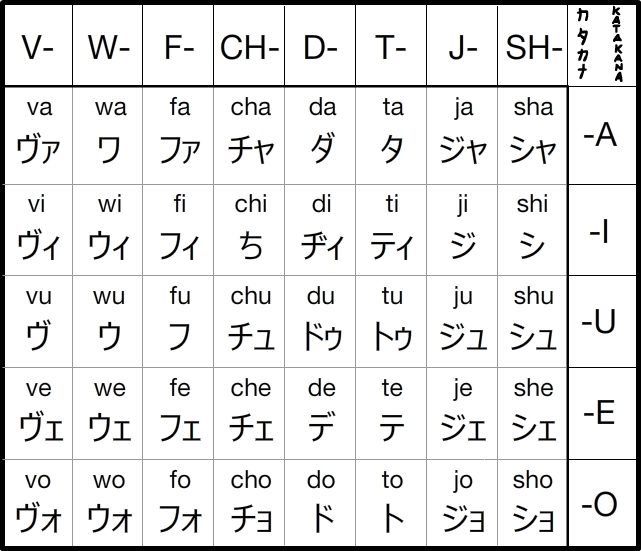

kanA
Kana are the characters which represent a single syllable. Once you learn how to pronounce each character, you'll know how to pronounce every word in the Japanese language!
There are 2 kana alphabets: Hiragana and Katakana
About Hiragana and katakana
Hiragana is the most commonly used alphabet in Japanese. It is used to create most words.
e.g. ねこ = cat, いぬ = dog
Katakana is utilized less often than Hiragana and is mainly used to create loan words borrowed from different languages but it can also be used for stylizing words.
e.g. オーストラリア = Australia, アメリカ = America
Kana tables
Below are the kana tables for Hiragana and Katakana. These are read from top to bottom, right to left.
To listen to the pronunciation of a character, please click the character.
-
Hiragana
Hiragana Table
Hiragana Notes:
As you can hear, the pronunciation of fu 「ふ」 isn't pronounced with a full 'f' but rather a sound between 'f' and 'h'.
The 'w' in wo 「を」 is silent. If you pronounce the 'w' in this character out loud, people will not understand what you are trying to say. This character is only used as a particle. This will be explored in the sentence pattern section of the site.
The character ha 「は」 when used as a topic marker particle is pronounced 'wa'. Every other time, the character is pronounced normally as heard in the interactive Hiragana Table. This is the only hiragana which has 2 readings!Small 「つ」
To extend a consonant in hiragana, you use a small tsu 「つ」 to elongate the consonant sound of the character in front of it
e.g. ka 「け」 + (small) tsu 「っ」 + ko 「こ」 = kakko 「かっこ」
To extend a vowel in hiragana, you use either a 「あ」, i 「い」, or u 「う」 depending on the vowel sound you want to make longer.
Extending Vowels
If you want to make an 'a' sound longer, you add another 'a' 「あ」 hiragana after it.
e.g. o-ba-san 「おばあさん」 - The word for grandmother
If you want to make an 'i' or 'e' sound longer, you add an 'i' 「い」 hiragana after it.
e.g. sen-se 「せんせい」 - The word for teacher
If you want to make an 'u' or 'o' sound longer, you add an 'u' 「う」 hiragana after it.
e.g. ko-ko 「こうこう」 - The word for highschool
Hiragana Dakuten and Handakuten Table
Dakuten and Handakuten notes:
The double stroke in the top right corner of certain hiragana is called "dakuten" and the circle in the top right of certain hiragana is called "handakuten". These create a set of 5 more consonant sounds.
The 'ji' 「じ / ぢ」 sounds are the same but zu 「ず」 is different from dzu 「づ」. Dzu has a slightly heavier consonant at the start.Hiragana Combination Table
Combining Hiragana Notes:
When you add a small ya 「や」, yu 「ゆ」, or yo 「よ」 next to certain hiragana, you can combine consonants with the ya, yo or yo sound.
e.g. ki 「き」 + ya 「や」 = kya (The vowel of the original hiragana is replaced with ya 「や」) -
Katakana
Katakana Table
Katakana notes:
Again, the pronunciation of fu 「ふ」 isn't pronounced with a full 'f' but rather a sound between 'f' and 'h'.
Wo 「ヲ」 is very rarely used if at all. It is a very old and nearly outdated character so you don't have to remember it.
Extending Vowels in Katakana
Using the small tsu also applies in Katakana, however, extending vowels is different but simpler. You simply use a dash 「―」in Katakana to make the previous vowel longer
e.g. ke-ki 「ケーキ」 - the word for cake
e.g. o-sutora-ria 「オーストラリア」 - the word for Australia
Additional Katakana Sounds Table

Additional Katakana Sounds notes:
Adding a dakuten to the 'u' 「ウ」 katakana simulates a v sound. However, most japanese people tend to use the 'b' set of characters to replace v.
e.g. Vanilla can be spelled either banira 「バニラ」 or 「ヴァニラ」. Both are acceptable.
Adding small 'a', 'i', 'o', 'e' katakana to certain characters to create new sounds which weren't around when hiragana was originally invented. By using this method you can create more foreign loan words.
i.e. Chess = 「チェッス」 chessu
Sofa = 「ソファー」 sofaa
Witch = 「ウィッチ」 wicchi